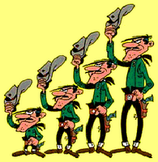

Vous allez réaliser une expérience de bandits à 4 bras. Pour cela :
|
 |
Durant l'expérience, un certain nombre d'informations ont été
enregistrées à chaque clic. Elles sont dans le fichier
dénommé 4bS.res.xxx.yyy.txt où xxx
et yyy vous identifie ainsi que votre machine. Cette
identification a pour seul but de pouvoir différencier les fichiers
les uns des autres.
Pour les manipulations ci-dessous, celles que nous avons déjà
rencontrées ne sont pas expliquées. Si vous avez oublié comment faire,
allez consulter le TP de découverte de
R.
> donnees <- read.table ("4bS.res.xxx.yyy.txt",
col.names = c ("jeu", "essai", "epoque", "delta.t", "choix", "s", "r", "r.cumule",
"p1", "p2", "p3", "p4"))
Bien entendu, vous mettez le nom de fichier correct.
On peut facilement sélectionner des données répondant à un certain critère. Ainsi :
Notez bien la virgule avant le crochet fermant ,] qui
reprend la syntaxe vue la fois précédente [ ligne(s),
colonne(s) ].
Notez bien également l'opérateur == pour tester l'égalité
entre deux objets. De même, on a != pour
différent, <, <=, >
et >=.
On peut combiner plusieurs conditions. Ainsi, pour sélectionner les données du jeu numéro 2 pour lesquels il y a eu un succès, on tapera :
> donnees [(donnees$jeu == 2) & (donnees$r == 1),]
L'opérateur & dénote le et-logique. Notez les parenthèses autour de chaque condition.
Rappelez-vous qu'existent les fonctions min () et max (). Sachez aussi qu'il existe les fonctions which.min () et which.max ().
Si on veut avoir les décomptes des succès pour chaque choix pour chaque jeu, on va devoir taper beaucoup de choses. On peut faire beaucoup plus simple en utilisant une boucle ; pour commencer, tapez ce qui suit :
> for (i in 1:10) {
print (i)
}
vous obtenez l'affichage des nombres de 1 à 10. Expliquons ce qui vient de se passer :
Avec cette notion de boucle, vous pouvez maintenant afficher le nombre
de clics sur chaque choix à chaque jeu.
Pour manipuler aisément ces décomptes, il faut les placer dans une
matrice. Cette matrice stockera pour chaque jeu et chaque choix le
nombre de clics. Cette matrice a donc 20 lignes (une par jeu) et 4
colonnes (une par choix). Pour créer cette matrice, on tapera :
> decomptes.tirages <- matrix (nrow = 20, ncol= 4)
Les éléments d'une matrice sont accédés comme ceux d'un data.frame,
par la notation [ ligne, colonne ].
On peut aussi affecter tous les éléments d'une colonne à la
fois : par exemple, decomptes.tirages [2, ] <- c (2, 8, 3,
1) affecte tous les éléments de la 2è ligne de la
matrice.
On veut étudier la question suivante : a-t-on tendance à cliquer
de plus en plus, voire exclusivement, sur le meilleur choix au fil des
essais d'un jeu ? On a envie que la réponse à cette question soit
plutôt positive.
Faisons un graphique des décomptes calculés ci-dessus. Cela donne
quelque chose ressemblant à la figure de gauche ci-dessous. Faites
cette figure avant de continuer.
Les fonctions which() et length() peuvent être utiles...
On ne voit pas grand chose sur ce graphique. Le fait qu'à chaque jeu,
la probabilité de succès de chaque choix change fait que représenter
le nombre de clics sur chaque choix n'éclaire pas la question que nous
nous posons.
Pour que la figure soit informative, il faudrait que le choix 1 soit
toujours le plus mauvais, ... le choix 4 toujours le meilleur. Si
l'expérience n'a pas été menée ainsi pour des raisons évidentes, rien
ne nous empêche de re-numéroter les choix à chaque jeu pour que les
choix soient numérotées de cette manière. Comment faire ?
La fonction sort() effectue un tri. Par exemple, vous
pouvez taper :
> sort (c (.2, .3, .05, .45))
et vous obtenez :
[1] 0.05 0.20 0.30 0.45
Vous pouvez aussi taper :
> sort (c (.2, .3, .05, .45), index.return = TRUE)
et vous obtenez :
$x [1] 0.05 0.20 0.30 0.45 $ix [1] 3 1 2 4
Cette notation indique que le résultat est un objet ayant deux attributs :
Si vous mettez le résultat dans un objet comme suit :
> resultat.du.tri <- sort (c (.2, .3, .05, .45), index.return = TRUE)
vous pouvez ensuite accéder à ces deux informations
par resultat.du.tri$x et resultat.du.tri$ix.
Supposons maintenant que nous ayons deux objets :
On peut imaginer que les secondes sont des probabilités de succès sur chacun des 4 choix et que les premières sont les nombres de clics sur chaque choix. Ainsi, les premières sont associées aux secondes : 12 est associé à la probabilité 0,2, 15 à la probabilité 0,3, ... Si on trie les probabilités par ordre croissant, pour obtenir les valeurs associés à chaque probabilité, il faut les ré-ordonner également. Cela s'obtient comme suit :
> resultat.du.tri <- sort (c (.2, .3, .05, .45), index.return = TRUE) > resultat.du.tri$x [1] 0.05 0.20 0.30 0.45 > valeurs.associees [resultat.du.tri$ix] [1] 8 12 15 13
Vous allez maintenant vous inspirer de cela pour réaliser un graphique
comme celui de droite ci-dessus qui représente le nombre de clics sur
chaque choix ; cette fois-ci, ceux-ci sont renumérotés en
fonction de leur probabilité de succès (1 = le choix dont la
probabilité de succès est la plus faible, ... 4 = le choix dont la
probabilité de succès est la plus forte). Les couleurs sont affectées
comme suit : noir pour le choix 1, rouge pour le choix 2, vert
pour le choix 3, bleu pour le choix 4. Les numéros de ces couleurs
sont 1, 2, 3, 4 respectivement (les choses sont bien faites...).
Les probabilités sont ici stockées dans
le data.frame donnees, dans les
attributs p1 à p4, soit les attributs 9 à 12.
On peut obtenir ces probabilités par donnees [1, 9:12] pour
le 1er jeu. Cela est lui-même un data.frame. Si on
veut trier ces valeurs, il faut les mettre dans un vecteur. Cela se
fait à l'aide de la
fonction as.numeric : as.numeric (donnees [i,
9:12]).
En préalable à la réalisation du graphique, vous stockerez ces décomptes dans une matrice dont la colonne i ne contiendra plus le nombre de clics sur le choix i, mais le nombre de clics sur le choix dont la probabilité est la iè quand celles-ci sont ordonnées dans l'ordre croissant. Dans la suite, on nommera cette matrice decomptes.tirages.tries.
Pour cela, on va partir de la matrice decomptes.tirages et, pour chaque ligne, on va trier les colonnes en fonction des probabilités de succès.
Si on considère la 1ière ligne, il faut donc trier decomtes.tirages [,1] en fonction des probabilités de succès. Ces probabilités de succès sont constantes durant tout le 1ier jeu ; on les trouve dans donnees [1,9:12] par exemple (mais aussi dans donnees [2,9:12], donnees [3,9:12], ... donnees [20,9:12]).
Il s'agît donc de trier ces probabilités et d'utiliser leur ordre pour ré-ordonner les éléments de la première ligne de la matrice :
tri <- sort (as.numeric (donnees [1, 9:12]), index.return = TRUE) decomptes.tirages.tries [1, ] <- decomptes.tirages [1, tri$ix]
Pour les 19 lignes suivantes, c'est la même chose ; on peut donc mettre cela dans une boucle.
La petite difficulté restante est de trouver les probabilités associées à chaque jeu. Pour le jeu 1, l'une parmi les 20 premières lignes de donnees les contient (cf. ci-dessus). Pour le jeu 2, ces probabilités sont dans donnees [21,9:12], donnees [22,9:12], donnees [23,9:12], ... donnees [40,9:12]. Pour le jeu 3, ces probabilités sont dans donnees [41,9:12], donnees [42,9:12], donnees [43,9:12], ... donnees [60,9:12]... Pour le jeu 20, ces probabilités sont dans donnees [381,9:12], donnees [382,9:12], donnees [383,9:12], ... donnees [400,9:12].
On remarque que pour le jeu j, ces probabilités sont dans donnees [20 * j,9:12].
Quand on met tout cela bout à bout, on obtient ce qui suit :
decomptes.tirages.tries <- decomptes.tirages
for (j in 1:20) {
tri <- sort (as.numeric (donnees [j * 20, 9:12]), index.return = T)
decomptes.tirages.tries [j, ] <- decomptes.tirages.tries [j, tri$ix]
}
À l'issue de l'exécution de cette boucle, la variable decomptes.tirages.tries contient les valeurs attendues dans les différentes colonnes : la colonne 1 correspond au choix dont la probabilité de succès est la plus faible, ainsi de suite jusque la colonne 4 qui contient le nombre de clics sur le choix ayant la plus grande probabilité de succès.
On pose quelques questions plus ouvertes pour analyser le comportement que vous avez émis. Pour y répondre, il faut réflêchir à une méthode et la mettre en œuvre.
A-t-on cliqué plus souvent sur les choix dont la probabilité de succès est élevée ?
Pour le savoir, faire un graphique indiquant en abscisses la probabilité des choix et en ordonnées, le nombre de clics sur ce choix. On obtiendra un graphique dans ce genre-là :
On se demande si le comportement est plus varié au début d'un jeu qu'à la fin. Cette variabilité est-elle plus faible à la fin d'un jeu ? ...